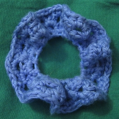

Cayenne's Yarncraft
Cayenne's YarncraftPatterns
Note that the ravelry sales link will work with or without a ravelry account but the links to see projects will only work if you have one.
All patterns copyright Cayenne Boyer. You may not make these designs to sell.
Amigurumi Octopus
See on ravelry: 
Grannyesque Headband
A granny square stretched out for your head. Very fast to crochet. See on ravelry: 
Requires worsted weight yarn (I used Knit Picks Shine Worsted, a 60% cotton, 40% rayon yarn) and a G hook.
- Chain 66
- Row 1: hdc in 3rd chain from hook, and next two chains. Repeat (hdc in each of the next 3 chains, ch-1, skip next chain) until you reach the end and have 16 squares. ch-2 (this is 3 chains since last hdc) and sl st in bottom of end square.
- Rnd 1: ch-2, turn, 2 hdc in this ch-space, ch-1. In each ch-space on edge, 3 hdc and ch-1. In each end ch-space, 3 hdc, ch-3, 3 hdc, ch-1. Join with a sl st when you reach turning chain.
- Rnd 2: repeat rnd 1
- Rnd 3: ch-1, turn. On edges, sc once in each ch-space and twice in each set of hdc's. On ends, 2 sc, ch-32, sc back along chain, 2 more sc in end loop. When you reach the beginning of the round, join to turning chain
- Tie off and weave in ends.
If the pattern is unclear, please contact me; I threw it together quickly when I was supposed to be writing a paper, and it's hard for me to step back and see what's clear and what isn't.
Grannyesque Scrunchie
More granny square like hair things, again very fast to crochet. See on ravelry: 
Requires worsed weight yarn (I used Knit Picks Shine Worsted, a 60% cotton, 40% rayon yarn), a G hook, and a hair elastic.
You can experiment with different yarns, number of repeats per round, and number of rounds. The only important thing is that the first round doesn't restrict the elastic from stretching to its full extent.
- Rnd 1: Repeat (sc on hair elastic, ch-2) 20 times. sl st in first sc.
- Rnd 2: ch-2, turn. 2 hdc in ch-space, ch-1. Repeat (3 hdc, ch-1) in each ch-space. sl st in turning chain.
- Rnds 3-4: Repeat rnd 2.
- Tie off and weave in ends.
These little scrunchies were made the same way except with Halcyon Yarn's 3/2 Pearl Cotton (a sport weight weaving type yarn), a C hook, and ending after round 3.
Hyperbolic Scrunchie
A little annulus
of hyperbolic space,
elastic in it thus
to hold your hair in place.
See on ravelry: 
For this I used Halcyon Yarn's 3/2 Pearl Cotton (a dense cotton sport weight yarn), a hair elastic, and a C hook
- Rnd 1: Repeat (dc on hair elastic, ch-1) 40 times. sl st in first dc
- Rnd 2: ch-3, repeat (dc in next ch-space, ch-1, dc in same ch-space, ch-1) in each ch-space until the the one with the turning chain. dc in that cch-space, ch-1, join to turning chain.
- Rnd 3: repeat rnd 2. End yarn.
- Rnd 4: In a new color, sc twice in each ch-space. Join and end.
All patterns copyright Cayenne Boyer. You may not make these designs to sell.